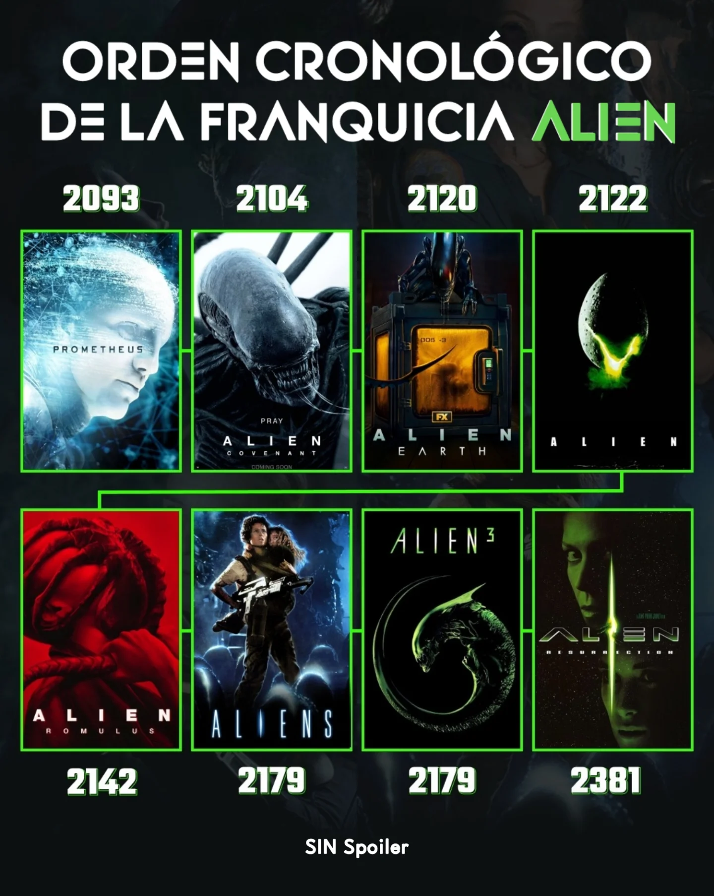
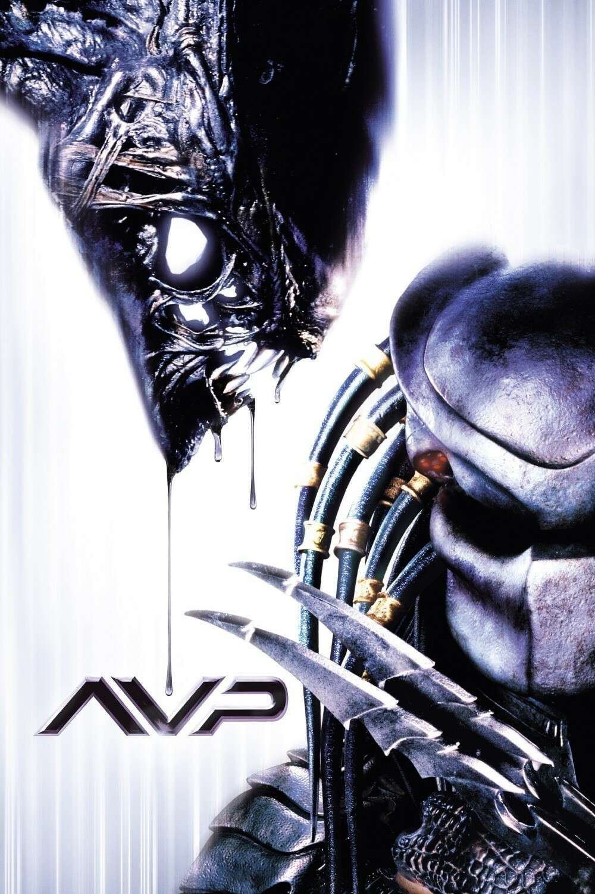
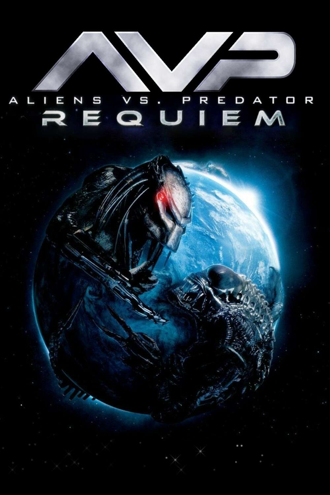

Productora: Brandywine Productions / 20th Century Fox
Sinopsis
En pleno viaje de regreso a la Tierra, la nave comercial Nostromo recibe
una señal de auxilio proveniente de un lejano planeta. Obligados a
investigar, parte de la tripulación desciende y descubre una extraña
nave abandonada que alberga huevos de una criatura desconocida. El
hallazgo pronto se convierte en una pesadilla: un organismo alienígena
se infiltra en la Nostromo y comienza a cazar a sus tripulantes uno por
uno. Atrapados en el espacio profundo, sin posibilidad de escape, los
protagonistas deberán enfrentarse a un enemigo implacable en un ambiente
asfixiante y de constante tensión.
Análisis e impacto
Personalmente, considero que Alien redefinió la forma de narrar el
terror en el cine de ciencia ficción. Su atmósfera claustrofóbica, el
diseño perturbador de
H. R. Giger y la construcción de
una protagonista femenina fuerte como Ripley marcaron un antes y un
después. Más que una simple película de monstruos, es un estudio sobre
el miedo a lo desconocido y la vulnerabilidad humana en el espacio. Su
impacto se nota no solo en las secuelas y precuelas que originó, sino
también en toda la cultura popular y en la manera en que entendemos hoy
el terror en el cine.
Universo
Alien el octavo pasajero logró crear un universo con distintas
películas, crossovers, Spin-offs, novelas, cómics, videojuegos y
merchandising diverso:
Películas de la saga principal
Alien, el octavo pasajero (1979)
Aliens: El regreso (1986)
Alien 3 (1992)
Alien: Resurrection (1997)
Prometheus (2012) - precuela
Alien: Covenant (2017) -precuela continuación de Prometheus
Alien: Romulus (2024) - situada entre Alien y Aliens

Spin offs y Crossovers (no son consideradas canonicas)
Alien vs. Predator (2004)
Aliens vs. Predator: Requiem (2007)


Otros medios
Novelas: novelización escrita por Alan Dean Foster en 1979 y decenas
de libros que amplían la historia.
Cómics: adaptaciones de la editorial Dark Horse Comics, primero
adaptaron las peliculas, pero luego crearon nuevas historias y
crossovers con otros comics importantes (ejs: Predator, Terminator,
Superman, Batman)
Videojuegos: desde clásicos como Alien Trilogy (1996) y Aliens vs.
Predator (1999, 2010), hasta el aclamado Alien: Isolation (2014),
que recupera la tensión y el terror de la película original. Cada
juego ofreció su propia forma de experimentar la amenaza xenomorfa,
desde el survival horror hasta la acción cooperativa.